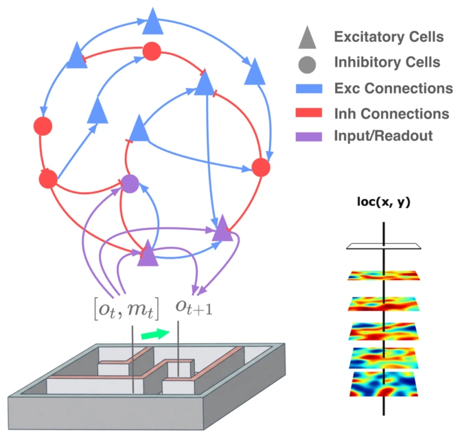
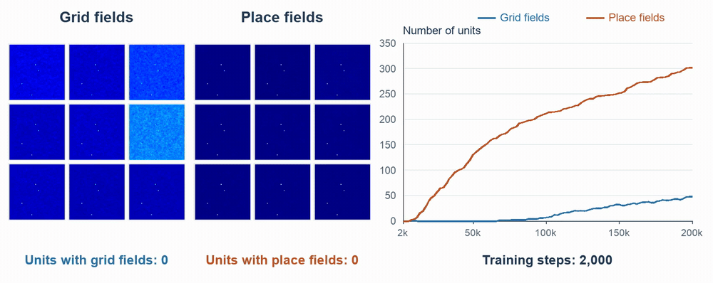
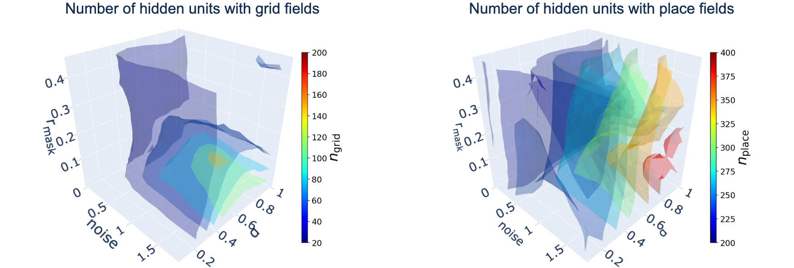
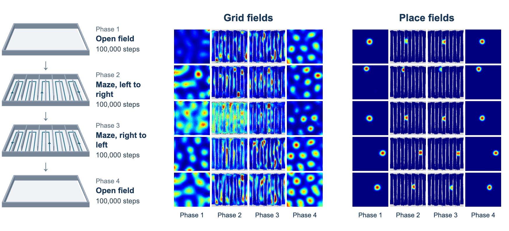
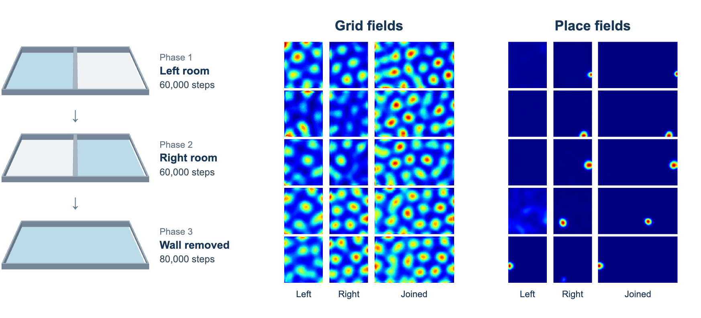
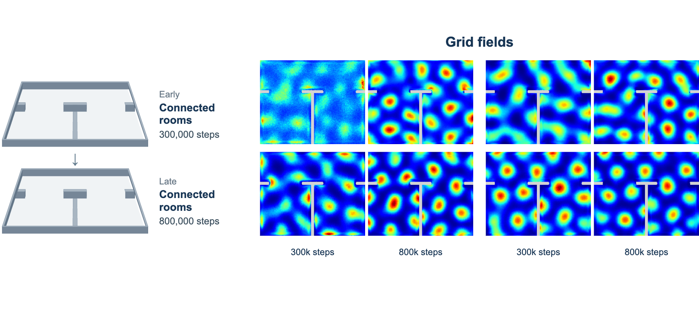
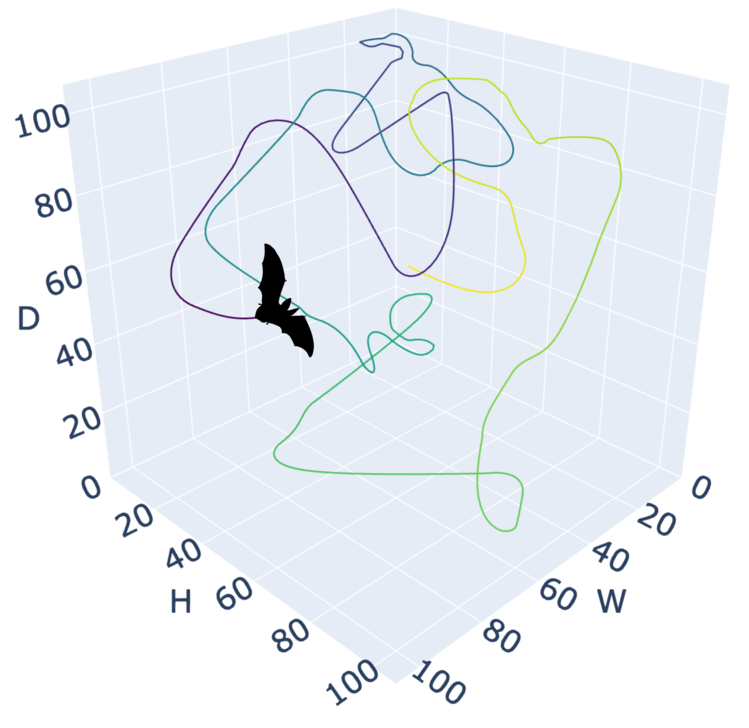
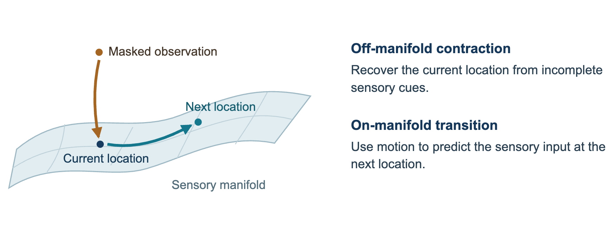

How is location represented during navigation?
Grid cells in the medial entorhinal cortex fire periodically across space, forming a triangular lattice that tiles the environment. Hippocampal place cells fire at specific locations and remap rapidly between learned environments.
Grid cells and place cells together support spatial navigation. While grid cells are thought to emerge from path integration, it has been suggested that place cells emerge from encoding sensory experience during navigation.

The chicken-and-egg problem of place and grid fields
In the brain, grid and place cells coexist within a single bidirectionally connected hippocampal-entorhinal circuit. Many theories of one cell type rely on the existence of the other. From the developmental perspective, these potential dependencies create a chicken-and-egg problem. If each cell type depends on the other, which arises first?
| Model class | Grid fields | Place fields | Spatial representation assumed |
|---|---|---|---|
| Circuit and geometric models of grid fields [1, 2, 3, 4, 5, 6, 7] | Mechanistic / emergent | Not modeled | Grid-specific circuit or geometric prior |
| Path-integration and place-target RNN models [8, 9, 10, 11] | Emergent | Predefined input / target | Allocentric coordinates or predefined place-field targets |
| Models of place-field emergence [12, 13] | Not modeled | Emergent | No grid-field prior |
| Successor-representation and predictive-map theories [14] | Derived / spectral | Derived / predictive | Explicit state graph or transition structure |
| Grid-place interaction and dependency models [15, 16, 17, 18] | Predefined | Predefined / mechanistic | Pre-existing grid or place fields |
| System-level grid-place models [6, 19] | Predefined | Predefined / constructed | Pre-existing spatial representations |
An alternative possibility is that the two types co-emerge. Simply adding bidirectional interactions to combine recurrent networks in which grid cells and place cells emerge individually does not lead to co-emergence, perhaps because each type requires distinct recurrent dynamics.
Predicting the next sensory observation
We introduce a recurrent network with 2,048 neurons that satisfies Dale’s law. Each neuron is constrained to be either excitatory or inhibitory. Half of the neurons receive direct external input, while the remaining half are only driven through recurrent connections. The network has no prior knowledge of spatial location or pre-existing spatial cell types.

At each step, the network uses the masked sensory observation and the egocentric motion signal to update its hidden state and predict the next sensory observation.
Place fields appear before grid fields
Place cells emerge before grid cells during training, consistent with recordings during rodent development [20, 21]. Place-cell counts rise earlier than grid-cell counts across ten random-seed replicates.

In an example trained network, we identified 58 grid-like units using a grid-score threshold of >0.3, predominantly among recurrently driven neurons, and 307 place-like units across both input-driven and recurrently driven neurons.
Which training conditions support both fields?
We test 1,000 different training configurations by varying the level of recurrent firing-rate noise, the fraction of sensory input masked, and the neuron decay rate, with a different random seed for each configuration. For this sweep, we use the more permissive grid-score threshold of 0.1. Place cells emerge robustly across nearly all settings. Grid-like periodicity preferentially emerges at higher noise levels and is modulated more weakly by the decay rate.


We also test whether grid and place cells still emerge when we train the network to reconstruct the current sensory observation from masked input rather than predict the next sensory observation. Under this condition, we still find 42 grid cells with grid scores above 0.3 and 329 place cells. Grid- and place-like cells also emerge when motion input is removed completely and consecutive sensory observations contain smooth transition information along trajectories.
A grid fragments in a hairpin maze
We replicate the experiment of Derdikman et al. [22], in which grid cells were recorded as rodents first explored an open field, then traversed an imposed hairpin maze, and then returned to the open field. In the hairpin maze, where movement is constrained to narrow corridors, grid patterns fragment across corridors. Upon returning to the open field, triangular firing patterns gradually recover as training continues.


In our model, place cells fire at corresponding locations in the open arena and hairpin maze, without the repetition across alternating arms reported by Derdikman et al. We predict that, when distinct visual landmarks or olfactory cues allow the animal to distinguish individual arms, individual place cells would fire selectively in a single arm.
Two grid maps merge after wall removal
We train the network for 60,000 steps in room 1 and 60,000 steps in room 2 while the rooms are separated by a wall, followed by 80,000 steps in the combined arena after wall removal. This tests whether the learned spatial code treats the two rooms as separate environments or as one continuous space.


After wall removal, grid patterns merge into a unified lattice spanning both rooms. The integration of grid maps is consistent with Wernle et al. [23], who observed local reorganization near the former partition while grid fields near distal walls remained largely stable. Our model further predicts that place-cell firing centers remain stable after wall removal when sensory cues at corresponding locations remain similar.
Grid fields align through a connecting corridor
Following Carpenter et al. [24], we connect two rooms by a corridor that the animal can freely traverse. The original experiment tested whether grid cells form local maps within each room or a global map across connected spaces. We therefore compare grid-cell responses early and late in training.


Early in training, grid cells show fragmented, locally triangular lattice patterns within each room. Later in training, some cells develop global patterns, with grid fields and periodicity becoming ordered across the connected environment despite the intervening walls.
Spatial fields during three-dimensional flight
We train the network in a 3D environment in which the agent moves freely through the full volume. The trajectory is generated by the same smoothed random-walk procedure with boundary avoidance used in 2D environments.
We find that place cells develop clear localized 3D firing fields. Grid cells also develop structured volumetric firing fields, but these fields are locally ordered rather than organized as a perfect global lattice, resembling locally ordered grid-like responses observed in freely flying bats [25].


Off-manifold contraction and on-manifold transition
The animal’s sensory experience traces a continuous trajectory on a manifold within high-dimensional sensory space, which is constrained to have the same low dimension as the physical space being explored. Masking observations perturbs them away from the manifold of valid sensory states. The network pulls the perturbed state back to the manifold.
This suggests that place cells can provide coordinates on the manifold of valid sensory experiences. To predict the next observation, the circuit should use the current motion to determine the next location on the sensory manifold. If the spatial location were represented in some local chart, it could be updated using the current velocity by a recurrent circuit. Grid cells can be interpreted as maintaining such a local chart.

Grid cells in the medial entorhinal cortex are known to be organized in a hierarchy of discrete modules. Our network only produced a single module in which the grid cells have similar periods.